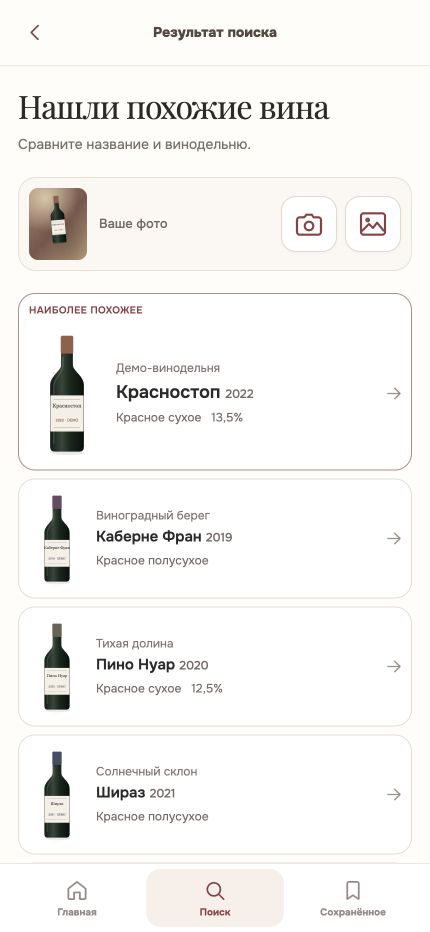
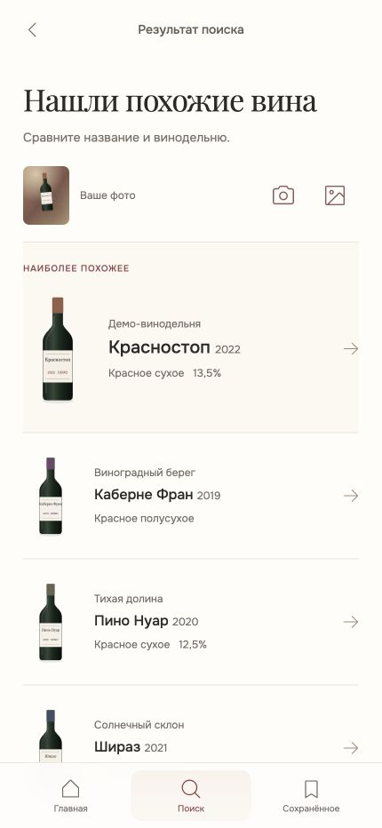
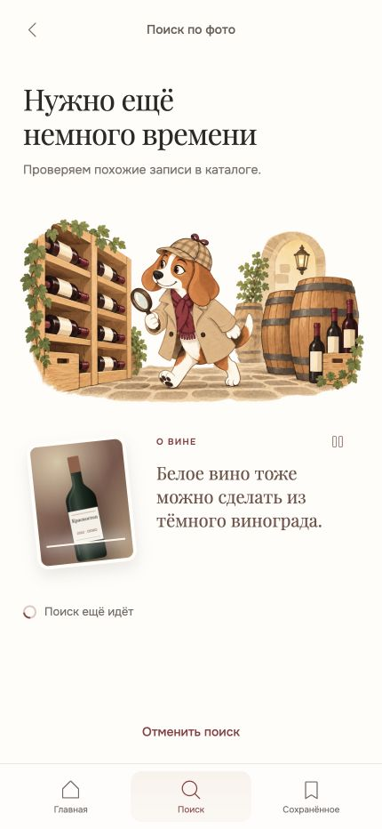
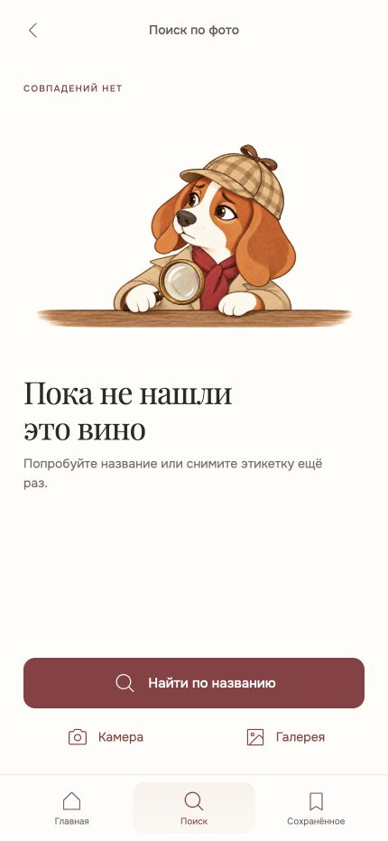
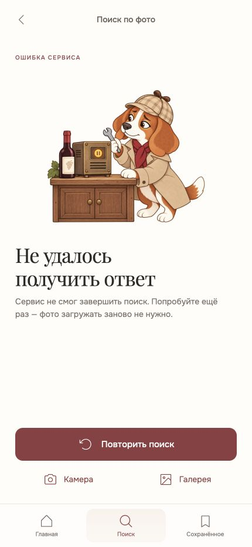
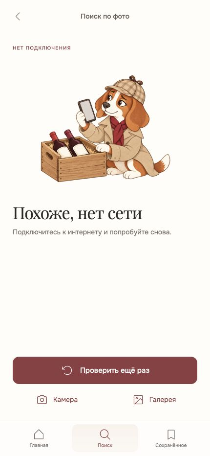
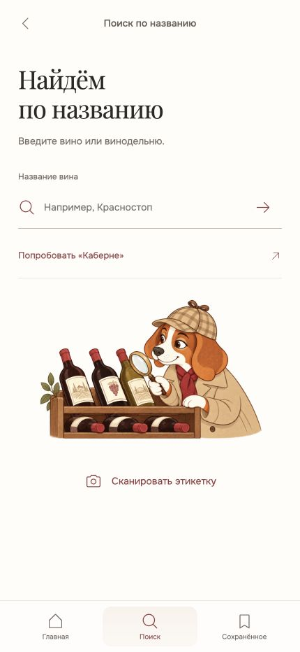
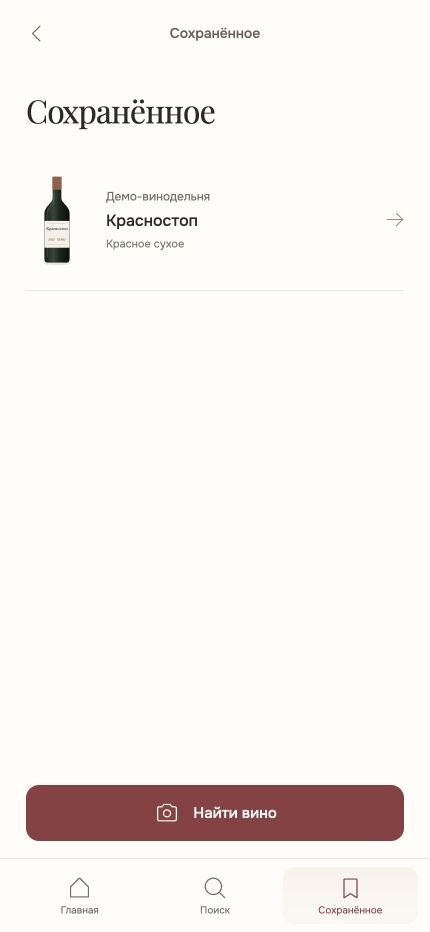

Строки вместо плиток
Apple использует строки для последовательного чтения; стандартный список SwiftUI поддерживает разделители. Здесь разделяем вина лёгкой линией, не обводим каждую бутылку.
Apple · Lists and tables ↗Своё Вино · дизайн 3.4 · отдельный вариант
Переносим настроение заметки о вине на весь интерфейс. Меньше рамок и подложек, тоньше иконки, больше свободного места. Бордовый, кремовый, Playfair и пёс остаются нашими.
Настоящие снимки двух макетов в одном размере: 430 × 932 CSS px. Для просмотра деталей нажмите на изображение.


Вместо пяти рамок — один список. Лидер выделен крупной бутылкой, названием и короткой подписью. Фото и две иконки не заключены в отдельную плашку.
Компромисс: на первом экране чуть меньше кандидатов. Вся строка остаётся нажимаемой; полные названия и известные свойства сохраняются.
Попробовать этот экран ↗
Исследование → адаптация
Apple использует строки для последовательного чтения; стандартный список SwiftUI поддерживает разделители. Здесь разделяем вина лёгкой линией, не обводим каждую бутылку.
Apple · Lists and tables ↗Размер, вес и интервалы создают приоритет. В нашем варианте первый кандидат крупнее, с едва заметным кремовым переходом в фон. Это композиционная гипотеза для обсуждения.
Apple · Typography ↗Всё семейство иконок — Phosphor Light. Прозрачные кнопки остаются крупными: камера и галерея 54 × 54 CSS px на основном размере. При нажатии появляется тихая подложка.
Phosphor · исходная библиотека ↗Источники подтверждают принципы, а не предпочтения наших пользователей. Это ещё не результат пользовательского теста. Полный разбор и ссылки ↗
Та же система в других состояниях
Композицию ожидания сохраняем: собака в погребе, наклонённый снимок, сменяющиеся заметки и пауза. В ошибках оставляем один главный выход; камера и галерея доступны без нового промежуточного шага.






Сравнение снято в одном браузере на 430 × 932. Дополнительно проверены мобильные ширины 402, 440, 412 и 360 px. Это проверка веб-вёрстки, а не тест на физических iPhone и Android. Все данные синтетические, системная камера и поиск не подключены.
Открытый список требует чуть больше прокрутки. Тонкие иконки сохранили контраст, но их удобство на реальном экране и при ярком свете ещё стоит оценить руками.
Air / 3.4. Отдельный вариант в папке air. Обновлены все 11 экранов: главная, камера, распознавание, долгий поиск, выдача, карточка, нет совпадений, ошибка сервиса, нет сети, ручной поиск, сохранённое. Старый v3.3 не изменён. Выполнены визуальное сравнение и ручная проверка ключевых переходов. Дизайн согласован 25.09.2026. Добавлен маскот пустого поиска по названию. Требования передаются в Sigma Ops BDD; TEST и PROD пока не обновлять.